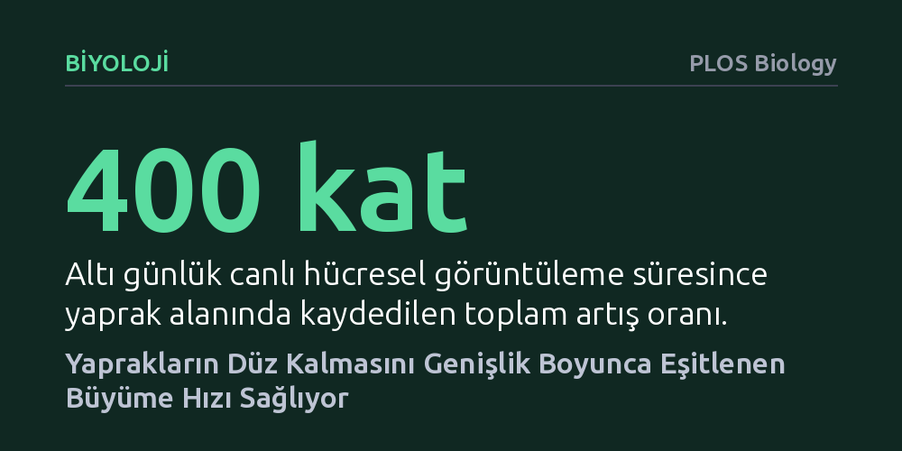

BIYOLOJI · PLOS Biology · 2026-09-09
Araştırmacılar, yaprakların büyürken iki boyutlu düz yapısını nasıl koruduğunu ve mekanik kıvrılmaların nasıl engellendiğini inceledi. Canlı hücre mikroskopisi ve mekanik modeller, yaprak genişliği boyunca boyuna büyüme hızının eşit tutulmasının iç gerilimleri önleyerek yaprağın düz kalmasını sağladığını gösterdi.
Yaprakların düz kalmasının yalnızca üst ve alt yüzey farkına değil, yaprak genişliği boyunca hücrelerin aynı hızda uzayarak mekanik gerilimleri önlemesine bağlı olduğunu gösteriyor.

Doğa çoğu zaman karmaşık biyolojik şekilleri zahmetsizce inşa ediyor gibi görünse de bir yaprağın kusursuz şekilde düz kalabilmesi fiziksel açıdan büyük bir başarıdır. Yapraklar mikroskobik bir tomurcuktan geniş bir yüzeye doğru büyürken hücreler sürekli bölünür ve genişler. Eğer bir dokunun yan yana duran parçaları birbirinden farklı hızlarda veya yönlerde uzarsa, ortaya çıkan mekanik gerilim dokunun düzlemini bozar; tıpkı ıslandığında ya da ütülendiğinde büzüşen bir kumaş gibi yaprak da kıvrılmaya, dalgalanmaya veya bükülmeye başlar.
Bugüne kadar bitki biyologları yaprak kıvrılmalarını genellikle yaprağın üst yüzeyi ile alt yüzeyi arasındaki büyüme hızı dengesizliğine bağlıyordu. Ancak bu klasik açıklama, yaprak yüzeyinin genişliği boyunca meydana gelen karmaşık dalgalanmaları ve bazı genetik mutasyonlarda görülen bükülmeleri tam olarak aydınlatamıyordu. Bir yaprağın iki boyutlu bir levha gibi düz kalabilmesi için hücre düzeyinde nasıl bir koordinasyon mekanizmasının devrede olduğu sorusu uzun süredir yanıtsızdı.
Bu mekanik gizemi çözmek isteyen araştırmacılar, model bitki Arabidopsis thaliana üzerinde ileri düzey canlı mikroskopi yöntemleri kullandı. Deneyde normal, düz yapraklı yabanıl tip bitkiler ile yaprakları dalgalı ve kıvrık gelişen jaw-D mutantı karşılaştırıldı. Yaprakların ilk oluşum anından itibaren altı gün boyunca hücrelerinin bölünmesi, büyüme hızları ve yapboz parçalarına benzeyen kaldırım hücrelerinin farklılaşması günbegün kaydedildi. Bu süreçte yaprak alanı 400 kat, hücre sayısı ise 100 kat artarken her bir hücrenin davranışı tek tek takip edildi.
Biyolojik görüntülemenin sunduğu devasa veri kümesi, mühendislikte yapısal gerilimleri hesaplamak için başvurulan sonlu elemanlar modellemesiyle birleştirildi. Araştırmacılar, mikroskop altında ölçtükleri hücresel büyüme hızlarını üç boyutlu sanal yaprak modellerine aktardı. Böylece hangi büyüme farklılıklarının yaprakta bükülmeye neden olduğu, hangilerinin ise düzlüğü koruduğu bilgisayar simülasyonlarıyla fiziksel olarak doğrudan test edildi.
Canlı görüntüleme ve mekanik simülasyonlar çok net bir mekanizmayı açığa çıkardı: Yabanıl tip yapraklarda hücrelerin büyüme hızı yaprağın tabanından ucuna doğru kademeli olarak yavaşlasa da yaprağın genişliği boyunca her yükseklik seviyesinde tamamen eşit ve koordine kalıyordu. Yaprak eni boyunca yer alan hücrelerin boyuna aynı hızda uzaması, doku içinde mekanik gerilim ve çatışma oluşmasını engelliyor, böylece yaprak tamamen düz kalabiliyordu.
Buna karşılık kıvrık yapraklı jaw-D mutantında bu koordinasyon tamamen çökmüştü. Özellikle yaprağın ortasından geçen ana damar bölgesindeki hücrelerin, kenarlardaki yaprak ayası hücrelerine göre çok daha yavaş uzadığı tespit edildi. Kenarlar hızla uzamaya çalışırken ortadaki damarın yavaş kalması şiddetli bir iç büyüme çatışması yaratıyor ve yaprağı bükülmeye zorluyordu. Ayrıca bu mutantta kaldırım hücrelerinin yapboz benzeri loblu şekillere farklılaşmasının geciktiği, ancak gözenek (stoma) diziliminin bu süreçten bağımsız işlediği gözlemlendi.
Elde edilen bulgular, yaprakların şekil almasında temel kuralın büyüme doğrultusuna dik eksende hız koordinasyonunu sağlamak olduğunu ortaya koyuyor. Yapılan simülasyonlar, boyuna büyüme hızının genişlik boyunca eşit olmadığı her durumda yaprağın kaçınılmaz olarak eyer, kubbe ya da dalgalı biçimlerde büküldüğünü kanıtladı. Üstelik araştırmacıların geliştirdiği yeni görüntüleme protokolü, yaprağın alt ve üst yüzeyleri arasındaki büyüme farkının mutant ile normal bitkide benzer olduğunu, dolayısıyla yaprak kıvrılmasının klasik teorideki gibi alt-üst yüzey farkından değil, genişlik boyunca yaşanan koordinasyon kaybından kaynaklandığını gösterdi.
Bu çalışma, karmaşık organların gelişiminde yalnızca genetik sinyallerin değil, hücrelerin birbirleriyle kurduğu mekanik ve uzamsal dengenin de belirleyici olduğunu gösteriyor. Bitkilerin ışığı en verimli şekilde toplamak için milyonlarca yıldır koruduğu düz yaprak formu, doku düzeyinde kusursuz bir hız senkronizasyonunun ürünüdür. Bu fiziksel prensiplerin anlaşılması, gelecekte tarımda yaprak mimarisini ve fotosentez verimini optimize etmeye yönelik biyoteknolojik çalışmalara da sağlam bir zemin sunmaktadır.